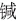

乾隆十年（1745），亦即史可法牺牲整整百年，史德威子史纂写下《家祭文二》，讲述一家的悲惨经历。他说，父亲多年奔走于吴晋之间（史德威是山西人，据文秉《甲乙事案》，还是少数民族，“夷种也”[111]），“流离困苦，每至墓侧，血泪交流，惧守祀之无人也。”庚戌年（1670，康熙九年），史德威“仓卒见背”，很突然地死去。当时，史纂“尚在襁褓”，母亲带他回到娘家，靠“十指线”把史纂拉扯大。己巳年（1689，康熙二十八年）史纂大约二十岁时，母亲也去世。之后，史纂生活极其艰辛，一度竟至“提携幼子，藉眠僧榻”，寄居寺院。他说，由于这些原因，“纂数十年来，蒿目松楸，而未能上请祀典者。”实际上，史德威一死，史墓既无人祭祀，也无人照管。雍正四年（1726），史纂景况稍好，到扬州谒祖，发现已“被巨猾占污”，墓不成墓。他找到地方官，“泣请当路驱除，筑园砖圹”，并叹道：“嗟乎！使护守维谨，何致惨遭践蹂。”[112]
乾隆九年（1744），情况始有变化。史纂说，那年扬州“详定春秋牲牢，我祖今始得邀明禋之典”。[113]尚系地方官之所为。又三十年，彻底大变。乾隆四十年（1775），乾隆皇帝颁旨，以史可法为忠臣楷模，隆重表彰。圣旨评价是：“节秉清刚，心存干济，危颠难救，正直不回。”[114]
赐谥“忠正”。乾隆皇帝并亲制御诗一首，题于史可法画像；命大学士于敏中及以下七人，步其韵各作诗一首；又命于敏中专门到“内阁册库”找出史可法当年给多尔衮的复信，由于敏中抄写之后刻碑；次年正式在扬州为史可法建祠。至此，史可法咸鱼翻身，从死无葬身之地，一跃而为享有个人专属祠堂。
故事未完。时间来到二十世纪。从“驱逐鞑虏，恢复中华”到抗战爆发，史可法成为与文天祥齐名的民族英雄。这形象一直保持到六十年代初，正如我们从史公祠诸多题辞看到的。而仅隔数年，一九六六年一月十日，“文革”尚未正式开始，《文汇报》发表了《应该怎样评价史可法——评中国历史小丛书〈史可法〉》一文，判定他为“镇压农民起义的刽子手”。虽然“文革”仅维持十年而破产，这评价却并未随之销声匿迹，反而似乎作为“经典”视角或关于史可法的条件反射，沉淀在一些人意识中。
我自己体会，五花八门各种评价中，以陈去病《五石脂》转述的张伯玉一番话，与一年来感受最相投契。陈氏介绍说：“有山阳人张伯玉者，名璵若，曾以布衣参公军，特为文祭公。”这位与应廷吉一样的督师府昔日幕僚，如此表述史可法的意义：
谓公居无如何之时，值不可为之地，而极不得已之心。当夫天崩地圮、日月摧冥，不死于城头，而死于乱军。无骨可葬，无墓可封，天也人也？亦公自审于天人之际而为之也！[115]
天也人也？我于史可法，取那个“人”字。尽人事以听天命。他所做的，大抵如此。
[1] 1974年台湾商务印书馆曾翻印再版。
[2] 魏斐德《洪业——清朝开国史》，江苏人民出版社，1995，第288页。
[3] 张廷玉等《明史》卷七十，中华书局，1974，第1693页。
[4] 同上。
[5] 魏斐德《洪业——清朝开国史》，江苏人民出版社，1995，第288页。
[6] 魏斐德《洪业——清朝开国史》，江苏人民出版社，1995，第1082页。
[7] 史可法《祭左忠毅公文》，《史忠正公集》卷四，商务印书馆，民国二十五年十二月，第48页。
[8] 阮元校刻《十三经注疏》，中华书局，1982，第1232页。
[9] 李昉等《太平御览》卷四十地部五，龙门山，中华书局影印，1995，第191页。
[10] 古籍极少却非完全没有以周岁来算的，例如《三国志•蜀书•谯周传》：“昔孔子七十二，刘向、扬雄七十一而没”，考孔子、刘向、扬雄三人生卒，可知这里的七十二、七十一岁都是周岁。
[11] 马其昶《桐城耆旧传》左忠毅公传弟四十四，黄山书社，1990，第161页。附注：这里“弟四十四”，并非“第四十四”之误；马氏身为桐城派大家，用字刻意求古。
[12] 张廷玉等《明史》卷七十，中华书局，1974，第1687页。
[13] 张廷玉等《明史》卷二百四十四，中华书局，1974，第6331页。
[14] 陈耀东注译《方苞刘大櫆姚鼐散文选》，三联书店（香港）、上海古籍出版社联合出版，1990，第26页。
[15] 同上，第28页。
[16] 《清史稿发刊缀言》，《清史稿》，中华书局，1977，第14732页。
[17] 张廷玉等《明史》卷二百七十四，中华书局，1974，第7015页。
[18] 徐鼒《小腆纪传》列传第三，史可法，中华书局，1958，第115页。
[19] 张廷玉等《明史》卷四十，中华书局，1974，第885页。
[20] 张廷玉等《明史》卷二百七十四，中华书局，1974，第7015页。
[21] 张廷玉等《明史》卷九十，中华书局，1974，第2193页。
[22] 孟森《明清史讲义》，中华书局，1981，第42页。
[23] 张廷玉等《明史》卷二百七十四，中华书局，1974，第7015页。
[24] 同上。
[25] 计六奇《明季南略》，中华书局，2008，第205页。
[26] 抱阳生《甲申朝事小纪》，书目文献出版社，1987，第692页。
[27] 张廷玉等《明史》卷二百七十四，中华书局，1974，第7016页。
[28] 黄宗羲《思旧录》，《黄宗羲全集》第一册，浙江古籍出版社，1985，第340页。
[29] 抱阳生《甲申朝事小纪》，书目文献出版社，1987，第692页。
[30] 陈耀东注译《方苞刘大櫆姚鼐散文选》，三联书店（香港）、上海古籍出版社联合出版，1990，第26页。
[31] 史可法《祭左忠毅公文》，《史忠正公集》卷四，商务印书馆，民国二十五年十二月，第48页。
[32] 张廷玉等《明史》卷二百七十四，中华书局，1974，第7023页。
[33] 陈耀东注译《方苞刘大櫆姚鼐散文选》，三联书店（香港）、上海古籍出版社联合出版，1990，第27页。
[34] 应廷吉《青燐屑》，留云居士《明季稗史初编》，上海书店，1988，第435页。
[35] 史可法《家书三》，《史忠正公集》卷三，商务印书馆，民国二十五年十二月，第36页。
[36] 史可法《家书五》，同上，第37页。
[37] 史可法《家书十一》，《史忠正公集》卷三，商务印书馆，民国二十五年十二月，第41页。
[38] 史可法《家书九》，同上，第38页。
[39] 史可法《家书六》，同上，第37页。
[40] 史可法《家书十二》，同上，第41页。
[41] 史可法《家书四》，《史忠正公集》卷三，商务印书馆，民国二十五年十二月，第36页。
[42] 史可法《家书十一》，同上，第40页。
[43] 史可法《二十一日遗笔》，同上，第44页。
[44] 魏斐德《洪业——清朝开国史》，江苏人民出版社，1995，第508页。
[45] 史可法《家书八》，《史忠正公集》卷三，商务印书馆，民国二十五年十二月，第38页。
[46] 张廷玉等《明史》卷二百七十四，中华书局，1974，第7023页。
[47] 史可法《家书八》，《史忠正公集》卷三，商务印书馆，民国二十五年十二月，第38页。
[48] 史可法《家书十二》，同上，第42页。
[49] 史可法《家书五》，同上，第37页。
[50] 史可法《家书九》，同上，第39页。
[51] 史可法《家书十一》，《史忠正公集》卷三，商务印书馆，民国二十五年十二月，第40页。
[52] 史可法《家书八》，同上，第38页。
[53] 史可法《家书四》，同上，第36页。
[54] 史可法《家书八》，同上，第38页。
[55] 史可法《家书四》，同上，第36页。
[56] 史可法《家书十一》，同上，第41页。
[57] 史可法《家书八》，同上，第38页。
[58] 史可法《与杨某》，《史忠正公集》卷二，商务印书馆，民国二十五年十二月，第29页。
[59] 史可法《遗书二》，同上，第43页。
[60] 史可法《遗书四》，同上。
[61] 史可法《遗书一》，同上。
[62] 史可法《遗书五》，同上，第44页。
[63] 韩愈《进学解》，《中华活页文选》第37期，中华书局上海编辑所，1961，第7页。
[64] 顾诚《南明史》，中国青年出版社，1997，第168页。
[65] 同上，第169页。
[66] 毛泽东《中国革命和中国共产党》，《毛泽东选集》第二卷，人民出版社，1991，第625页。
[67] 顾诚《南明史》，中国青年出版社，1997，第173页。
[68] 顾诚《南明史》，中国青年出版社，1997，第174页。
[69] 卓尔堪《明遗民诗》，钱仲联主编《清诗纪事》明遗民卷，江苏古籍出版社，1987，第134页。范孟博即范滂，东汉末名士，孟博是他的字，以气节刚硬闻名。
[70] 邓汉仪《诗观三集》，钱仲联主编《清诗纪事》明遗民卷，江苏古籍出版社，1987，第135页。
[71] 朱庭珍《筱园诗话》，钱仲联主编《清诗纪事》明遗民卷，江苏古籍出版社，1987，第135页。
[72] 邓之诚《清诗纪事初编》，同上，第136页。
[73] 顾诚《南明史》，中国青年出版社，1997，第182页。
[74] 同上，第183页。
[75] 顾诚《南明史》，中国青年出版社，1997，第183页。
[76] 同上，第184-186页。
[77] 李清《南渡录》，《南明史料（八种）》，江苏古籍出版社，1999，第212页。
[78] 徐鼒《小腆纪传》列传第三，史可法，中华书局，1958，第123-124页。
[79] 张廷玉等《明史》卷二百七十四，中华书局，1974，第7021页。
[80] 徐鼒《小腆纪传》列传第三，史可法，中华书局，1958，第124页。
[81] 应廷吉《青燐屑》，《明季稗史初编》，上海书店，1988，第441页。
[82] 徐鼒《小腆纪年附考》，中华书局，2006，第358页。
[83] 黄宗羲《弘光实录钞》卷一，《黄宗羲全集》第二册，浙江古籍出版社，1986，第3-4页。
[84] 应廷吉《青燐屑》，《明季稗史初编》卷二十四，上海书店，1988，第429页。
[85] 史可法《议设四藩疏》，《史忠正公集》卷一，商务印书馆，民国二十五年十二月，第3页。
[86] 应廷吉《青燐屑》，《明季稗史初编》卷二十四，上海书店，1988，第429页。
[87] 同上，第430页。
[88] 同上。
[89] 同上。
[90] 同上，第430-431页。
[91] 应廷吉《青燐屑》，《明季稗史初编》卷二十五，上海书店，1988，第438页。
[92] 梅村野史《鹿樵纪闻》，台湾文献丛刊第五辑《东山国语•鹿樵纪闻》（合订本），台湾大通书局，1995，第2页。
[93] 徐鼒《小腆纪年附考》，中华书局，2006，第173页。
[94] 应廷吉《青燐屑》，《明季稗史初编》卷二十四，上海书店，1988，第427页。
[95] 同上，第428页。
[96] 应廷吉《青燐屑》，《明季稗史初编》卷二十四，上海书店，1988，第421页。
[97] 同上，第424页。
[98] 同上。
[99] 顾炎武《圣安皇帝本纪》，《南明史料（八种）》，江苏古籍出版社，1999，第115页。
[100] 李清《南渡录》，《南明史料（八种）》，江苏古籍出版社，1999，第405页。
[101] 文秉《甲乙事案》，《南明史料（八种）》，江苏古籍出版社，1999，第548页。
[102] 顾苓《金陵野钞》，《南明史料（八种）》，江苏古籍出版社，1999，第212页。
[103] 夏允彝《幸存录》，《明季稗史初编》卷十五，上海书店，1988，第309页。
[104] 应廷吉《青燐屑》，《明季稗史初编》卷二十五，上海书店，1988，第442页。
[105] 史德威《史可法维扬殉节录》，《甲申朝事小纪》，书目文献出版社，1987，第13-14页。
[106] 同上，第14页。
[107] 史德威《家祭文一》，扬州史公祠陈列件。
[108] 同上。
[109] 史可法《遗书四》，《史忠正公集》卷三，商务印书馆，民国二十五年十二月，第43页。
[110] 史德威《史可法维扬殉节录》，《甲申朝事小纪》，书目文献出版社，1987，第14页。
[111] 文秉《甲乙事案》，《南明史料（八种）》，江苏古籍出版社，1999，第548页。
[112] 史纂《家祭文二》，扬州史公祠陈列件。
[113] 同上。
[114] 《钦定胜期殉节诸臣录》，《史忠正公集》卷首，商务印书馆，民国二十五年十二月，第3页。
[115] 陈去病《五石脂》，《丹午笔记•吴城日记•五石脂》，江苏古籍出版社，1999，第327页。